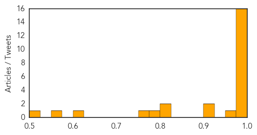

Influenza
30-Day Web Trend
0 alerts, 0 warnings

30-Day Twitter Trend
0 alerts, 0 warnings

Article Locations

Article Confidences
Top Articles:
- 1.000
- FluWatch report: January 18 to January 24, 2015 (Week 3)
- 0.999
- Minnesota reports ‘swine flu’ H1N1v case
- 0.997
- Public Health Notice Update: H7N9 avian flu
- 0.996
- Indiana reports highest number of flu-related deaths in a decade
- 0.996
- 58 Oklahomans have died from flu this season
- 0.996
- 1,035 people hospitalized and 56 have died of flu this season in Toronto
- 0.995
- Austria 'on threshold of flu outbreak'
- 0.994
- Flu Scan for Jan 30, 2015
- 0.993
- Second H7N9 bird flu case confirmed in B.C.; husband of first patient
- 0.992
- Second bird flu case confirmed in B.C.
- 0.992
- Husband of woman diagnosed with H7N9 bird flu confirmed as second case
- 0.992
- 52 flu-related deaths in Alberta so far this season
- 0.989
- Canada's Flu Vaccine Didn't Work Very Well This Year
- 0.986
- No H3N2 flu vaccine available until April as Hong Kong death toll jumps to 81
- 0.986
- The Reporter Newspaper – BAHA seizes $600,000 worth of breeder hens to contain bird flu outbreak at Spanish Lookout
- 0.979
- Halting the spread of bird flu
- 0.950
- Influenza: the mother of all mild respiratory infections
- 0.924
- Officials: Flu numbers have tripled in Cayuga County
- 0.912
- Tamiflu Cuts 1 Day Off Average Flu Bout, Study Finds
- 0.820
- Flu toll reaches 108 as it continues to claim lives in Indiana
- 0.805
- H5N1 bird flu strikes 12th Nigerian State
- 0.790
- This year’s flu shot won’t help you
- 0.750
- JRMC visitation restrictions lifted
- 0.616
- Canada reports 2nd H7N9 avian flu case
- 0.558
- India, Bangladesh’s scientists agree to share information on infectious disease
- 0.525
- Nevada confirms avian flu case
Top Tweets:
- 0.659
- flu season in Europe, early vaccine effectiveness estimates from Canada & more on influenza: http://t.co/rfsEKMuciK
Unknown
30-Day Web Trend
0 alerts, 0 warnings

30-Day Twitter Trend
3 alerts, 0 warnings

Article Locations

Article Confidences

Top Articles:
- 0.952
- Bird Flu Spreads To 11 States …RSG Confirms Fresh Case
- 0.944
- Indiana flu deaths rise to 108 with latest state report
- 0.942
- Second bird flu case confirmed in Canada
- 0.932
- H5N1 bird flu spreads to 11 states in Nigeria
- 0.929
- Cambridge Memorial Hospital enteric outbreak leaves 7 more infected
- 0.925
- Second bird flu case confirmed in Canada
- 0.917
- Chicago Tribune
- 0.917
- Chicago Tribune
- 0.917
- Chicago Tribune
- 0.917
- Chicago Tribune
- 0.917
- Chicago Tribune
- 0.917
- Chicago Tribune
- 0.917
- Chicago Tribune
- 0.917
- Chicago Tribune
- 0.917
- Chicago Tribune
- 0.917
- Chicago Tribune
- 0.915
- Eight At Charlotte School Test Positive For Tuberculosis, Officials Say
- 0.910
- The world windows to Thailand
- 0.891
- Charlotte News
- 0.853
- 9 flu-related deaths reported in NC last week
- 0.823
- Vermont Health Department Finds Positive Results For TB
- 0.821
- Treating Sinus Infections Without Antibiotics
- 0.819
- Second Case of Bird Flu in Canada Confirmed
- 0.793
- No. of flu patients tops 2 million for 3rd week in a row ‹ Japan Today
- 0.789
- New TB Cases Confirmed in Charlotte - Story
- 0.774
- Beechwood rehab center not accepting new patients due to confirmed flu case
- 0.765
- Yemen: WHO deplores attacks on health workers and health facilities in Afghanistan, Sudan and Yemen
- 0.762
- WHO deplores attacks on health workers and health facilities in Afghanistan, Sudan and Yemen - Yemen
- 0.757
- White House urges parents to heed advice urging childhood vaccines
- 0.756
- Cervical Cancer Awareness Month - Story
- 0.741
- Vigilance called for amid global rubella surge: CDC
- 0.711
- Forecasting the Flu Better
- 0.707
- Djokovic survives 5-set thriller to set up Murray final
- 0.705
- US police confront Google over ‘cop-tracking’ app
- 0.705
- Greece warned against trying to reverse bailout deals
- 0.703
- Romney rules out run in 2016 presidential election
- 0.703
- Deadly explosion strikes Shiite mosque in Pakistan
- 0.693
- Daughter of L’Oréal heiress says artist plotted to ‘destroy’ family
- 0.691
- A Haitian Youth Orchestra: Is It a Dream?
- 0.685
- IS group crisis increases headaches for Jordan’s crown
- 0.679
- African Union backs 7,500-strong force to fight Boko Haram
- 0.615
- Zimbabwe's president Robert Mugabe, 90, becomes African Union chairman
- 0.608
- Mugabe Appointed AU Chairman As African Leaders Rebuff Warnings From Zimbabwe
- 0.604
- Gonorrhea epidemic reported in Sacramento Valley county
- 0.604
- Comité économique et social européen
- 0.587
- H7N9 bird flu case confirmed in 2nd B.C. patient
- 0.581
- Function, Location & Problems
- 0.574
- Zimbabwe's president Robert Mugabe, 90, becomes African Union chairman
- 0.568
- Norway confirms first instance of mad cow disease
- 0.539
- NYC Health Department urges flu medication use
Showing top 50 articles...
Top Tweets:
- 0.511
- RT: @Cuadrado jugará en Chelsea (@DitoLemos), periodista de la BBC confirmó la noticia al programa Momento Depor. de Antena…